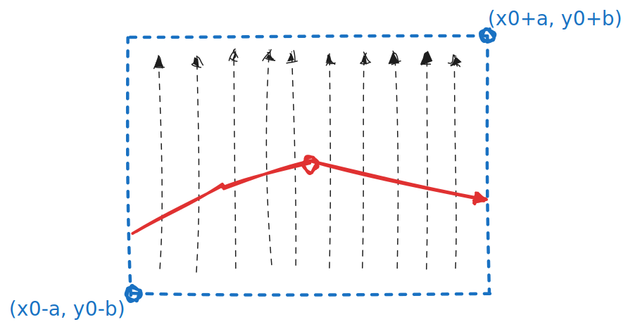
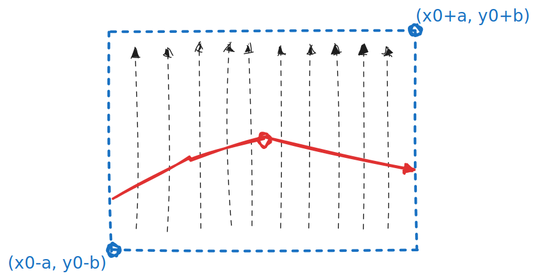

Jacobi 行列式和隐函数存在定理
二元函数隐函数存在定理
这个定理是局部的，邻域的：
连续可微，方程 在 附近满足 ，则其附近存在一个邻域内能唯一确定一个函数
证明：
由于 连续可微，则其偏导连续，即 连续
不妨设 ，则，直觉上说，其附近能找到一个方块邻域 ，在这块区域里

由于偏导恒正，于是竖向上 单增，因而能确定唯一的一条连续曲线使得 ，该曲线必有 能确定一个唯一的
反过来说
反过来说， 并不一定就不存在唯一隐函数，譬如 ， 在 附近其偏导
Press ← or → to navigate between chapters
Press S or / to search in the book
Press ? to show this help
Press Esc to hide this help
这个定理是局部的，邻域的：
连续可微，方程 在 附近满足 ，则其附近存在一个邻域内能唯一确定一个函数
证明：
由于 连续可微，则其偏导连续，即 连续
不妨设 ，则，直觉上说，其附近能找到一个方块邻域 ，在这块区域里

由于偏导恒正，于是竖向上 单增，因而能确定唯一的一条连续曲线使得 ，该曲线必有 能确定一个唯一的
反过来说， 并不一定就不存在唯一隐函数，譬如 ， 在 附近其偏导